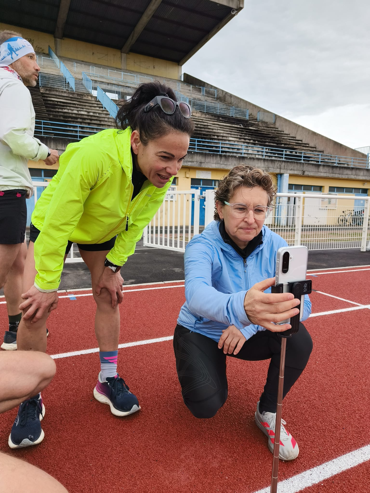
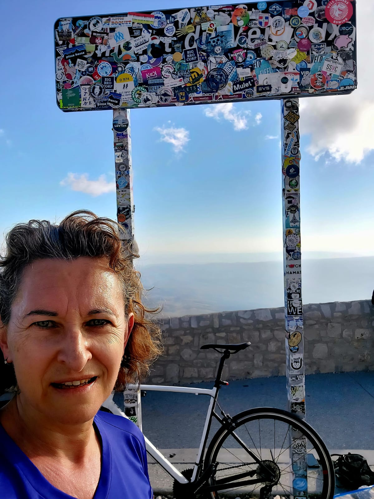
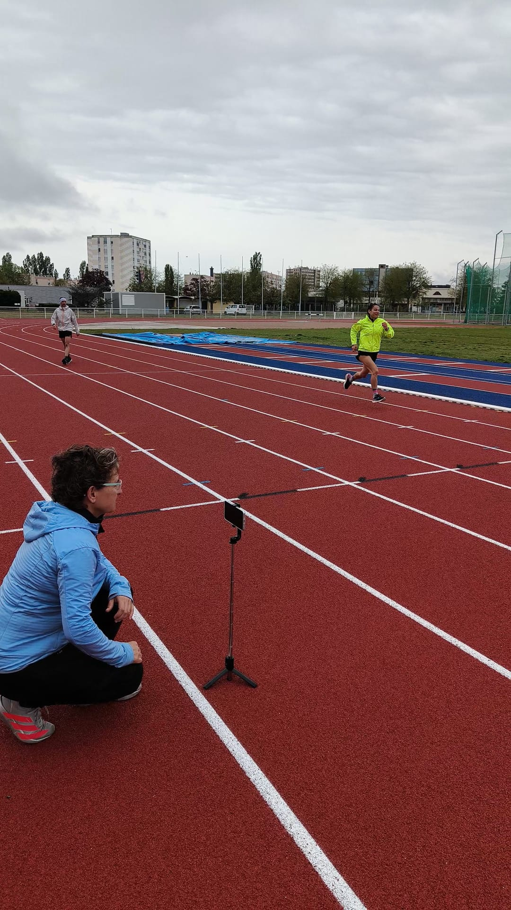
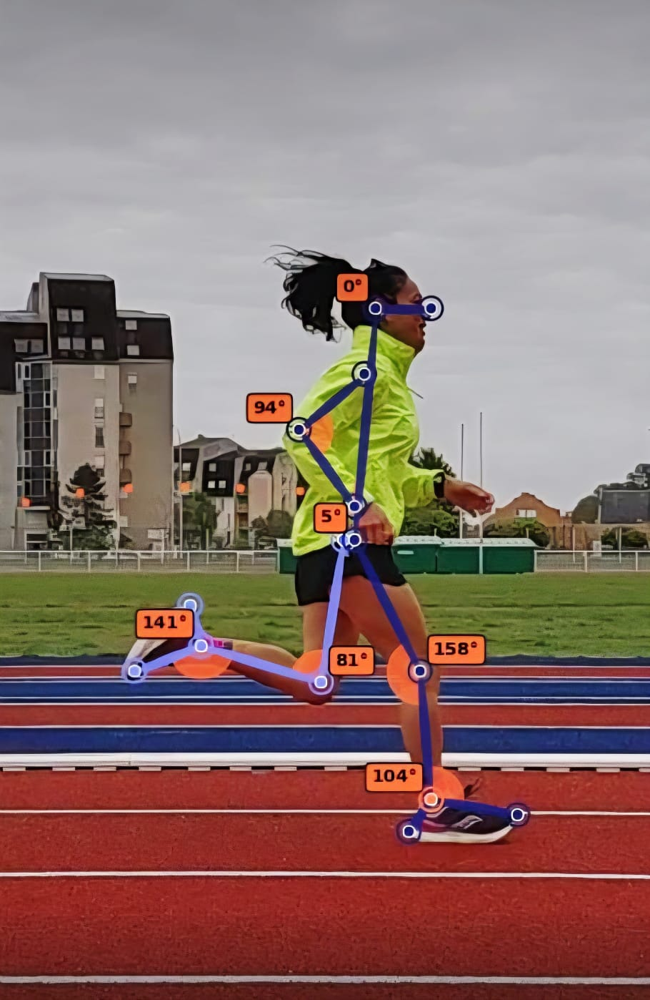
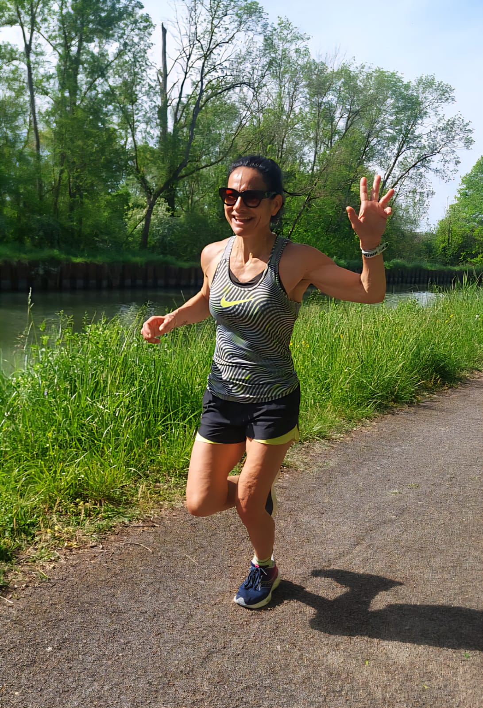
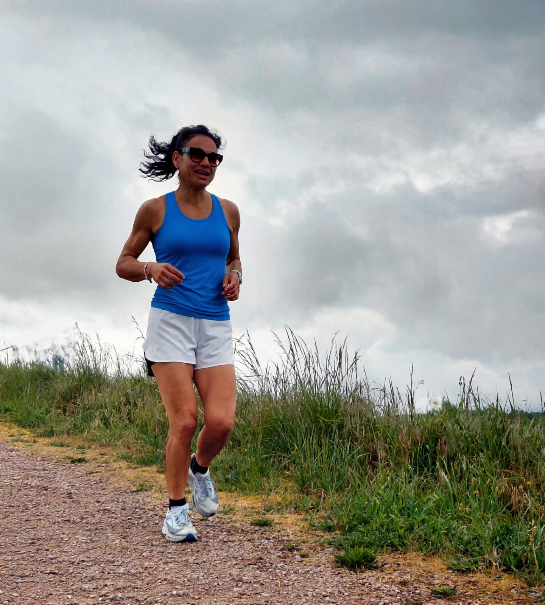
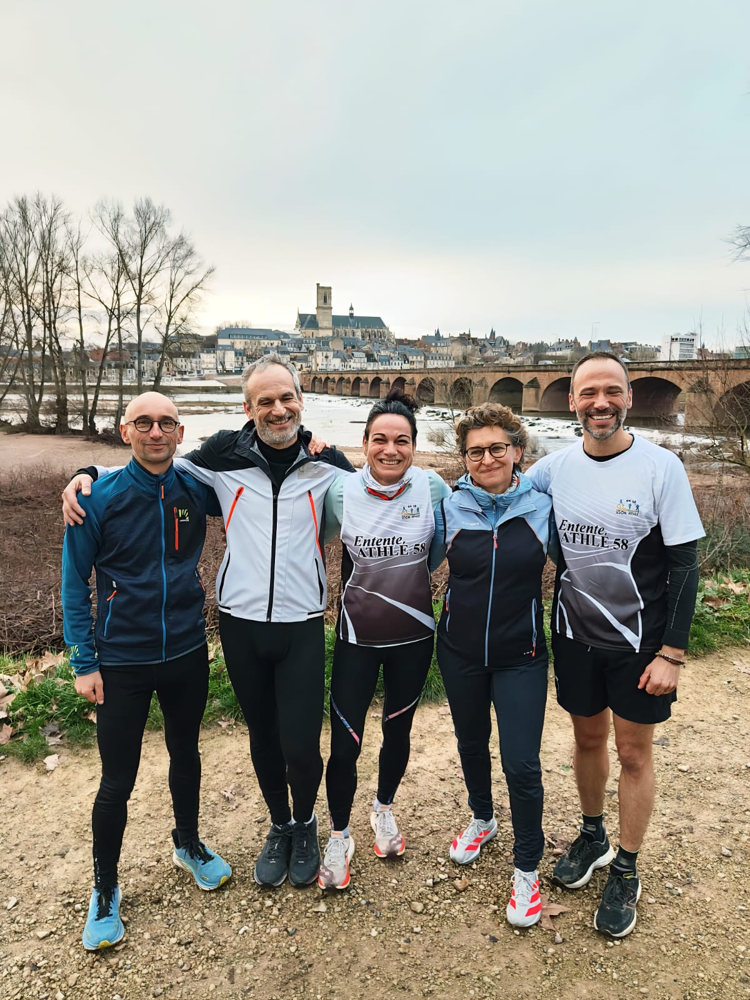
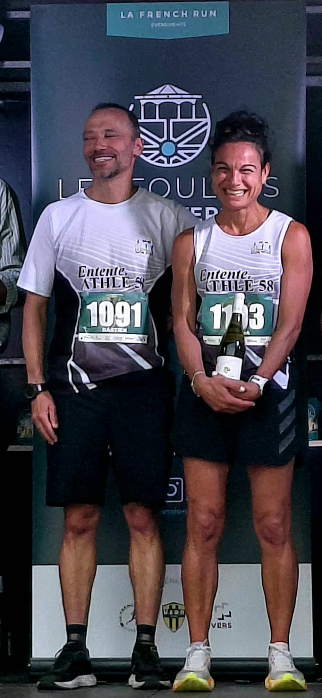
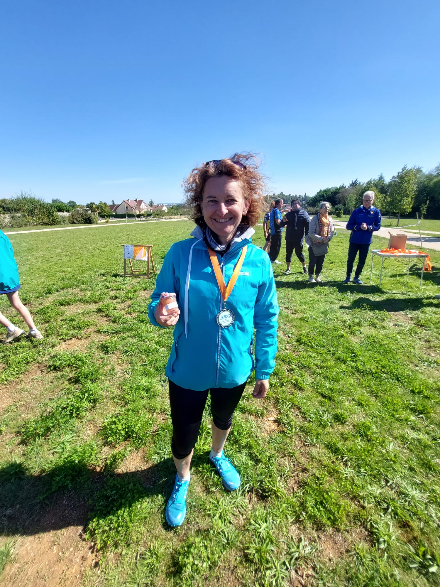

Des prestations sur-mesure alliant expertise de kinésithérapeute du sport et méthodologie d'entraînement rigoureuse. Pour courir juste, progresser sans se blesser et atteindre vos objectifs.

En tant que kinésithérapeute du sport, je ne me contente pas de vous donner un plan d'entraînement. J'analyse votre biomécanique, détecte les déséquilibres musculaires et articulaires, et construis un programme qui respecte votre corps tout en le poussant vers de nouveaux objectifs.

Avant tout programme, il faut se connaître. En 30 minutes, j'évalue votre condition physique actuelle, vos objectifs et vos contraintes pour vous proposer la formule la plus adaptée à votre profil. Un premier rendez-vous sans engagement, en présentiel ou en vidéo.


Grâce à l'outil Ochy (analyse vidéo biomécanique certifiée) et à vos données de montre connectée, j'identifie les asymétries, les compensations et les zones à risque. Un diagnostic chiffré et objectif de votre technique de course — indispensable avant tout programme sérieux.


Que vous enfilerez vos premières chaussures de running ou que vous prépariez un objectif de chrono, j'ai conçu des formules progressives et claires. Chaque programme est disponible sur l'application Nolio pour un suivi complet, accessible partout et en temps réel.

Chaque semaine, j'ajuste votre programme en fonction de vos sensations, de vos données GPS et de votre emploi du temps. Pas de plan rigide copié-collé : un accompagnement vivant, réactif et toujours centré sur vous — disponible sur l'application Nolio.


Pour les coureurs qui visent un objectif précis — sub 2h au semi, podium en trail ou record personnel au marathon. Planification complète (course + renforcement + entraînement croisé), tests VMA/vitesse critique et stratégie de course millimétrée.
Que vous soyez débutant ou athlète confirmé, je construis avec vous un programme adapté à vos objectifs et à votre corps.